Family of Rizal
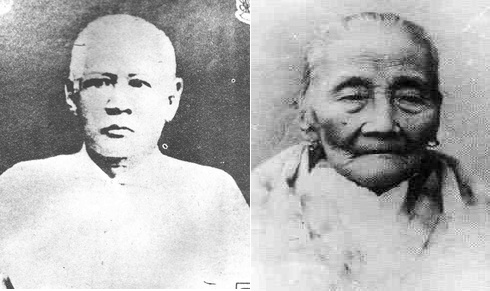
Parents and Siblings of Rizal
Jose Rizal came from a wealthy family in Calamba, Laguna, considered one of the largest families in those times, the 13-member-family consisted of his father Francisco Mercado II, his mother Teodora Alonso Realonda, himself, nine sisters and one brother. The Rizal paternal ascendant was Domingo Lam-co, a full-blooded Chinese who lived in Amoy, China and arrived in the Philippines in the closing years of the 17th century. Domingo Lam-co was married to a Chinese half-breed named Ines de la Rosa. The Mercado-Rizal family had also Japanese, Spanish, Malay and Negrito blood aside from their Chinese blood.
FRANCISCO MERCADO RIZAL (1818-1898) Father of Jose Rizal who was the youngest of 13 offsprings of Juan and Cirila Mercado. Born in Biñan, Laguna on April 18, 1818; studied in San Jose College, Manila; and died in Manila.
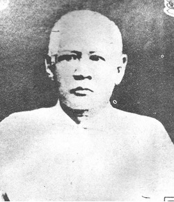
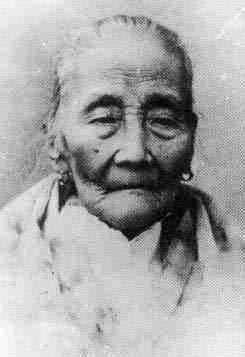
TEODORA ALONSO REALONDA (1827-1913) Mother of Jose Rizal who was the second child of Lorenzo Alonso and Brijida de Quintos. She studied at the Colegio de Santa Rosa. She was a business-minded woman, courteous, religious, hard-working and well-read. She was born in Santa Cruz, Manila on November 14, 1827 and died in 1913 in Manila.
SATURNINA MERCADO RIZAL (1850-1913) Eldest child of the Rizal-Alonzo marriage, nicknamed Neneng. She married Manuel Timoteo Hidalgo of Tanawan, Batangas.
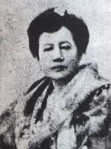
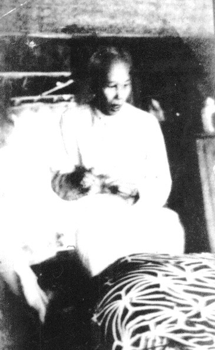
PACIANO MERCADO RIZAL (1851-1930) Only brother and confident of Jose Rizal; after his younger brother's execution he joined the Philippine Revolution and became a combet general After the revolution he retired to his farm in Los Baños, where he lived as a gentleman farmer and died on April 13, 1930, an old bachelor aged 79. He had two children by his mistress (Severina Decena). - A boy and a girl.
NARCISA MERCADO RIZAL (1852-1939) The third child, her pet name was Sisa and she married Antonio Lopez (nephew of Father Leoncio Lopez) at Morong, Rizal; a teacher and musician.
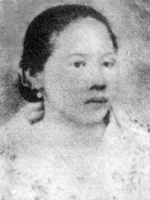

OLYMPIA MERCADO RIZAL (1855-1887) The fourth child, Ypia was her pet name; she married Silvestre Ubaldo, a telegraph operator from Manila. She died in 1887 from childbirth.
LUCIA MERCADO RIZAL (1857-1919) The fifth child. She married Mariano Herbosa of Calamba, who was a nephew of Father Casanas. Herbosa died of cholera in 1889 and was denied a Christian burial because he was a brother-in-law of Dr. Jose Rizal.
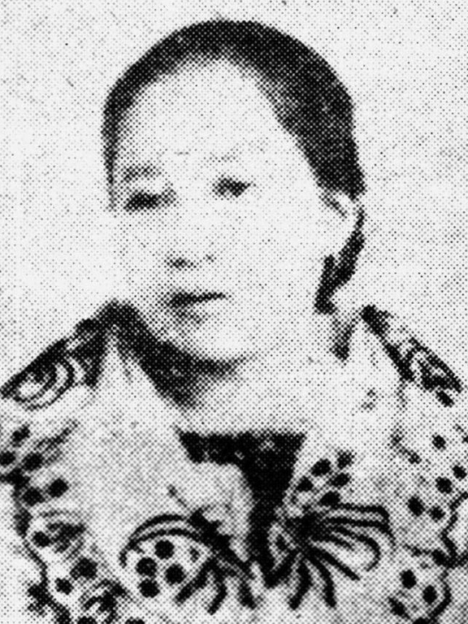
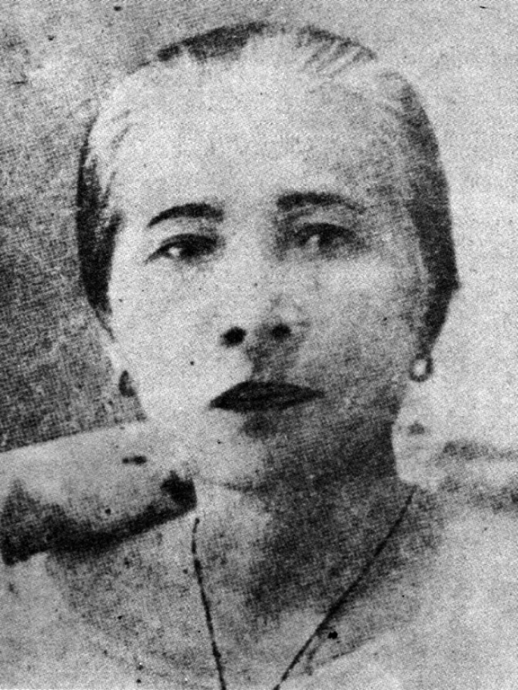
MARIA MERCADO RIZAL (1859-1945) The sixth child, Biang was her nickname and she married Daniel Faustino Cruz of Biñan, Laguna.
JOSE MERCADO RIZAL (1861-1896) The second son and the seventh child. His nickname was Pepe, he had a son with Josephine Bracken, an Irish girl from Hong Kong, he had a son by her but died soon after his birth. Rizal named his son "Francisco", after his father, and buried him in Dapitan. Rizal was executed by the Spaniards on December 30,1896.
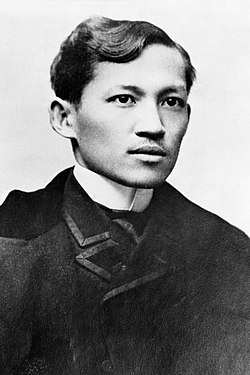
CONCEPCION MERCADO RIZAL (1862-1865) The eighth child, her pet name was Concha; she died of sickness at the age of three. Her death was Rizal's first sorrow in life.
JOSEFA MERCADO RIZAL (1865-1945) The ninth child, her pet name was Panggoy. An epileptic, died a spinster at the age of 80.

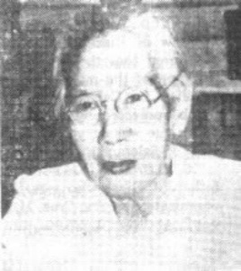
TRINIDAD MERCADO RIZAL (1868-1951) The tenth child, Trining was her pet name. Also died a spinster and the last of the family to die at the age of 83.
SOLEDAD MERCADO RIZAL (1870-1929) The youngest of the Rizal children; her pet name was Choleng; she married Pantaleon Quintero of Calamba.
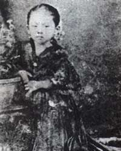